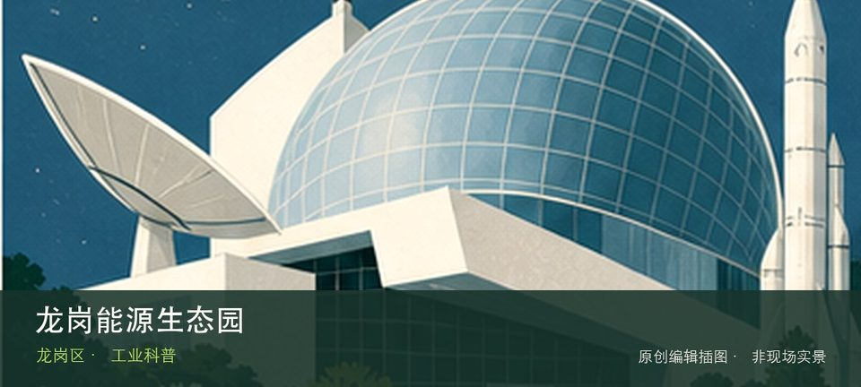

适合谁
适合亲子、学生和希望理解城市技术系统的人；预约型场馆不适合未经确认直接到场。

SHENZHEN GUIDE · 181
坪地 · 工业科普
龙岗能源生态园位于坪地，垃圾焚烧发电、烟气治理和园区生态设计在真实设施中呈现，参访必须通过预约导览和安全通道。这里不是只有一个打卡点：垃圾焚烧发电提供主要线索，烟气净化流程补足另一层现场关系。参观重点是通过垃圾焚烧发电与烟气净化流程理解技术如何进入城市日常，而不是只收集装置照片。预约、活动场次和可参与项目会改变体验，出发前要同时核对开放日与入场条件。
WHY GO
适合亲子、学生和希望理解城市技术系统的人；预约型场馆不适合未经确认直接到场。
完成公众预约并确认集合点、车牌和服装要求，沿指定参观线看完处理流程，不脱离导览。
公共交通先到坪地片区，再以龙岗能源生态园公开参观入口为终点；校园、园区或预约型场馆须同时核对门禁与开放日。
自驾优先使用龙岗能源生态园所属建筑、园区或邻近正规公共停车场；预约时一并确认车牌登记、门岗和社会车辆准入规则。
全年可安排，高温或降雨日适合作为室内主行程；户外实验、天文和基地活动仍严格受天气影响。
NEARBY IDEAS
 编辑配图·非现场实景
编辑配图·非现场实景
西湖塘位于园山街道西湖塘片区，首批历史风貌区保留客家聚落的街巷、围屋和山前村落关系，参观以公共通道为限。从西湖塘客家街巷转向山前聚落格局时，地点的空间、历史或使用方式才会变得清楚。
 编辑配图·非现场实景
编辑配图·非现场实景
香元老围位于龙岗区香元排片区，传统客家围屋在城市社区中保留门楼、围合院落与宗族空间线索，内部开放以现场为准。
 编辑配图·非现场实景
编辑配图·非现场实景
深圳市龙岗区东江潮红色文化博物馆位于新生社区，以东江地区革命文献、生活物件和地方记忆为专题，适合补充公共纪念馆之外的民间收藏视角。